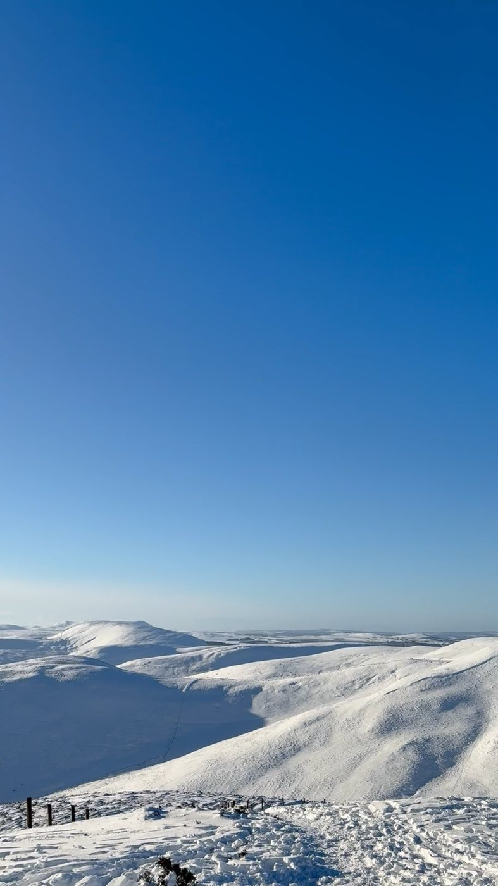
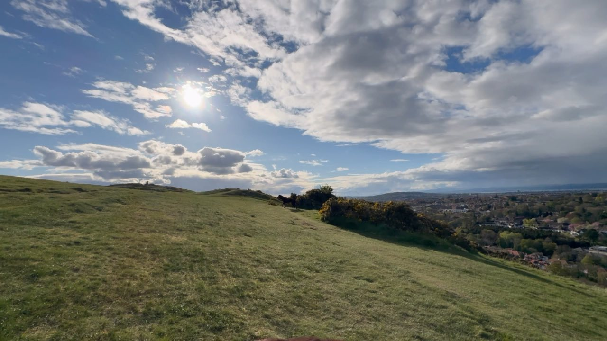

Walks / The Pentland Hills
Moderate · Pentland Hills Regional ParkThe Pentland Hills
Open ridge walking over Caerketton and Allermuir, with the option of carrying on to Turnhouse, Carnethy and Scald Law — the highest of the range at 579 metres.
Why the Pentlands first
My first proper adventure was the Pentlands, over twenty years ago, when I was about two years old and being carried. Since then I've walked, run and sledged most of it — muddy puddles with the family chocolate Labrador included.
The range offers a wide choice of walks, from gentle paths around the reservoirs at Bonaly and Threipmuir to the steeper pull onto Caerketton and the long switchback ridge over the Kips. Robert Louis Stevenson grew up beneath them and called them the hills of home, and once you've spent a clear afternoon up there it isn't hard to see why.
On a good day you can see the Forth bridges, Fife, the Ochils and, if the air is very clean, the Highlands beyond.
On the day
Pick-up or meet
Meet at the trailhead, or I can arrange to meet you in the city and travel out together — it is about half an hour from the centre.
Onto the ridge
A steady climb onto Caerketton, which does most of the day's ascent in one go. We take it at whatever pace suits.
Allermuir and along
Open ridge walking with the whole city laid out to the north and the reservoirs below to the south.
Scald Law, if the day allows
On a full day we carry on over Turnhouse and Carnethy to Scald Law, the highest of the Pentlands.
Down and back
A gentler descent on a different line, so you see new ground on the way out.



